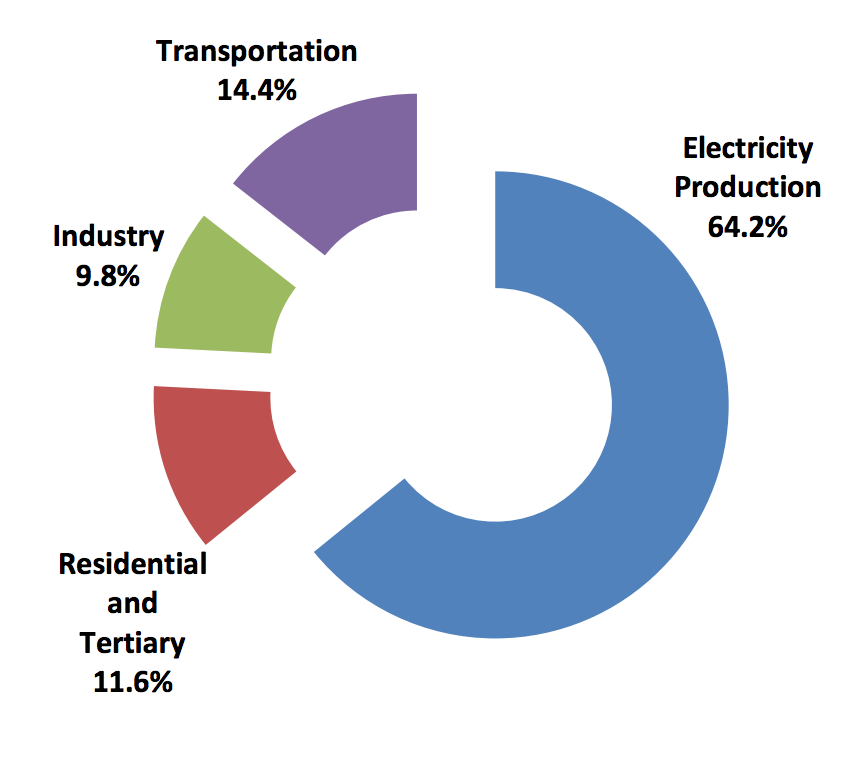

Morocco’s Nationally Determined Contribution (NDC) is an improved version of the Intended Nationally Determined Contribution (INDC) that Morocco presented to the United Nations Framework Convention on Climate Change (UNFCCC) on June 5, 2015. Although Morocco is responsible for only a small share of the problem of climate change, it developed its NDC with the conviction that the global ambition to counter the effects of climate change calls for a commitment from all parties with regard to mitigation and adaptation, as well as means of implementation, cooperative approaches and transparency. As a result, in compliance with Article 3 of the Paris Agreement, Morocco’s NDC presents the kingdom’s efforts to combat climate change across all of the aforementioned themes.
Located on the southern shore of the Mediterranean, at the gates of Europe and northern Africa, Morocco has always been a crossroads of civilizations. In recent decades, Morocco has experienced substantial economic and social development within the context of climate change that has an impact on all sectors. Consequently, the pressure on natural resources has increased, affecting the resilience of forest ecosystems and the agriculture sector, particularly because of water scarcity. Water availability per capita was over three times higher in 1960 (approximately 2,600 m3 per capita per year) than it is today (approximately 700 m3 per capita per year).
Aware of this situation, Morocco has voluntarily and resolutely engaged in a process to combat global warming, progressively outlining its own vision while complying with decisions taken collectively at the international level.
This political will is today embodied by the kingdom’s 2011 Constitution, which gave it a new impetus by enshrining sustainable development as a right for all citizens, and by instituting new instruments of democratic governance, a condition to achieving sustainable development across the country. This political will is further enshrined in the Framework Law on the National Charter for Environment and Sustainable Development (NCESD), which asserts “the rights and duties inherent to the environment and sustainable development accorded to natural and legal persons and proclaims these principles to be respected by the state, local authorities and public institutions and businesses.”[1] The operationalization of the charter was undertaken through the preparation of the National Strategy for Sustainable Development (NSSD), which will guide the actions of all public institutions and private actors in furthering social and economic development that is both sustainable and dynamic.Make its territory and civilization more resilient to climate change while ensuring a rapid transition to a low-carbon economy.
Morocco’s NDC finds its institutional roots in the NSSD and outlines a vision of Morocco in 2030. As a result, the implementation of Morocco’s NDC is part of an integrated approach that goes beyond climate change, to include:
Morocco has the conviction that significant and unprecedented engagement from Moroccan actors is required, notably those in the financial sector who have the ability to influence investment flows and their peers engaged in international finance.
To promote this engagement from stakeholders at different levels, Morocco has established the Moroccan Competence Centre for Climate Change (4C Maroc),[2] a capacity-building and information-sharing platform on climate change. The platform is available to various stakeholders and has a regional and African outreach. The Mosaïcc portal[3] was also established as a result of a partnership between national and international institutions. The portal strives to build capacity around adaptation to climate change in the agricultural, water and forestry sectors. The 4C Maroc and the Mosaïcc portals will be the drivers of this engagement.
In developing its NDC, Morocco undertook a broad, two-year stakeholder consultation process. During this process, Morocco reviewed the policies and programs that are being implemented to combat global warming and determined how ambitious the country wants to be in its NDC.
The process for developing its INDC culminated in a national conference, held on June 2, 2015, in Rabat and chaired by the head of government, to officially present the draft INDC to all Moroccan stakeholders. Consultations held after the adoption of the Paris Agreement strengthened the foundations of the NDC, and enabled a renewal of stakeholder engagement by ensuring their full support for the implementation of the commitments included in the present document.
Morocco’s Commitment: Key Takeaways
Morocco, moved by its deeply held convictions of common but differentiated responsibility, by its belief in a common human destiny and its commitment to the principle of equity, strives to outline the path to a global, responsible and fair pledge for the well-being of our planet.
Owing to Morocco’s high vulnerability to the impacts of climate change, Morocco ought to first minimize the risks of these impacts and invest in adaptation compared to mitigation actions. Morocco has made important strides in matters of adaptation since its independence in 1956. Between 2005 and 2010, the kingdom dedicated 64 % of its total climate spending to adaptation efforts, a value equivalent to 9 % of its total investment spending.
The proportion of Morocco’s national budget dedicated to adaptation is a testimony to the scale of the challenge facing Moroccan society. Efforts will have to increase over the coming years and decades. As an example, Morocco forecasts that, between 2020 and 2030, the implementation of adaptation programs will cost at a minimum USD 35 billion for the most vulnerable sectors, namely water, forestry and agriculture.
With regards to mitigation, Morocco’s GHG emission reduction targets will be achieved through economy-wide actions. Coordination of mitigation targets stemming from all sectoral strategies and all action plans will fall under the auspices of a low-carbon development strategy, which is currently being drafted. Numerous sectors will be addressed by these plans and strategies, namely energy, agriculture, transportation, water, waste, forestry, industry, housing and infrastructure.
Morocco commits to reducing its GHG emissions by 42 % below businessas- usual (BAU) levels by 2030. This commitment will only be made possible if Morocco gains access to new sources of finance and to additional support relative to support received in recent years. This commitment leads to a total reduction of 527 million tonnes of carbon dioxide equivalent (Mt CO2e) between 2020 and 2030. The total cost to reach this goal is USD 50 billion, of which USD 24 billion would be conditional on international support made available through new climate finance mechanisms, including the Green Climate Fund (GCF).
In terms of mitigation, Morocco has set a national greenhouse gas (GHG) emission reduction target of 42 % below BAU emissions by 2030, which can only be reached under the condition of benefitting from substantial support from the international community. Morocco also commits to an unconditional reduction target of 17 % below BAU levels by 2030, taking into account reductions in Agriculture, Forestry, and Other Land Use (AFOLU).
These GHG emission reduction targets will be achieved by measures taken in all sectors of the economy. Coordination of mitigation targets stemming from all sectoral strategies and all action plans will fall under the auspices of a low-carbon development strategy, which is currently being drafted. Numerous sectors will be targeted by these plans and strategies, namely energy, agriculture, transportation, water, waste, forestry, industry, housing and infrastructure.
Morocco’s GHG mitigation goals rely in large part on an important transformation of the country’s energy sector. This transformation is driven by great political will. It aims to reduce the country’s heavy reliance on foreign energy sources and increase the share of renewable energy, while responding to growing demand for energy to ensure the socioeconomic development and well-being of its citizens. The primary goals that underlie this energy transition are the following:
| Unconditional Target | A 17 % reduction in GHG emissions by 2030 compared to a BAU scenario, with 4 % coming from AFOLU actions. Without AFOLU actions, the reduction target is 13 %. |
| Conditional Target | An additional reduction of 25 % achievable under certain conditions, which would bring the total GHG reduction to 42 % below BAU emission levels by 2030, including AFOLU actions. Without AFOLU actions, the additional reduction would be 21 %, which would bring the conditional reduction target to 34 % |
| Financial Needs and Conditions | Meeting the overall target of 42 % requires an investment estimated at USD 50 billion between 2010 and 2030. Meeting the conditional component of the target, for which costs are estimated to reach USD 24 billion, is conditional upon access to new sources of finance and to additional support, compared to that received over the past years. |
| Expected Trajectory | For reference and planning purposes only, Figure 1 and Table 1 present Morocco’s forecasts of the emissions pathways associated with the targets presented. |
Figure 1. Emissions pathways of mitigation scenarios (with and without AFOLU)
Table1. Summary of Morocco’s key data regarding the mitigation scenarios
| Mt CO2e | 2010 | 2020 | 2025 | 2030 | Total 2020-2030 |
|---|---|---|---|---|---|
| Emissions – Bau | 93.9 | 121.6 | 142.7 | 170.8 | 1584.8 |
| Emissions – Unconditional Scenario (with AFOLU) | 93.9 | 107.1 | 116.7 | 141.4 | 1326.9 |
| Emissions – Unconditional Scenario (without AFOLU) | 93.9 | 111.3 | 122.5 | 148.7 | 1390.4 |
| Emissions – Conditional Scenario (with AFOLU) | 93.9 | 97.2 | 91.6 | 98.9 | 1061.3 |
| Emissions – Conditional Scenario (without AFOLU) | 93.9 | 101.9 | 101.8 | 113.2 | 1172.1 |
| Expected Reductions – Unconditional Scenario (with AFOLU) | 0 | 14.6 | 26 | 294 | 257.9 |
| Expected Reductions – Unconditional Scenario (without AFOLU) | 0 | 10.3 | 20.3 | 22.1 | 194.3 |
| Expected Reductions – Conditional Scenario (with AFOLU) | 0 | 24.4 | 51.1 | 71.9 | 523.5 |
| Expected Reductions – Conditional Scenario (without AFOLU) | 0 | 19.7 | 40.9 | 57.5 | 412.7 |
| Type of Targets: | Emission reductions from projected emissions for the year 2030, according to a BAU scenario |
| Coverage: | Economy-wide: |
| Gases Covered: |
|
| Sectors covered: |
|
| BAU Scenario | GHG emission projections for 2030, starting in 2010, which is the first year of implementation of the National Plan for the Fight against Global Warming. Projections do not take into account the mitigation measures and actions implemented from 2010. |
| Mitigation Scenarios | GHG emission projections for 2030, starting in 2010. The unconditional mitigation scenario is based on the implementation of 24 actions, including 9 AFOLU actions. The conditional scenario assumes the implementation of 31 additional actions over the period 2010–2030, including 11 AFOLU actions (see Annex 1). A 2030 GHG emissions pathway taking into account the elimination of public fossil fuels subsidies has been carried out to consider potential additional GHG reductions coming from these reforms. |
| Global Warming Potential (GWP) | The GWP values used are those determined by the Intergovernmental Panel on Climate Change (IPCC), according to Decision 17/CP.8 of the UNFCCC, for the preparation of national emissions inventories:
|
| Methodology for Estimating Emissions | The 2010 GHG emissions inventory, as well as BAU and mitigation scenarios, were completed according to the revised 1996 IPCC Guidelines. The BAU and mitigation scenarios were developed based on data from the National Statistics Directory, on data on sectorial activities and on economic, demographic and sectoral prospective analyses. |
| Methodology for Estimating Emissions from Agricultural, Forestry and other Land-Use Sectors | For the agriculture and forestry sectors, only CO2 stored in biomass was taken into account. For the agricultural sector, GHG emissions and CO2 sequestered from agroforestry programs and development of rangelands included in the Morocco Green Plan (olive cultivation, agroforestry of fruits, citrus, argon, fruit trees, palm trees, date trees and development of rangelands) are taken into account. For the forestry sector and other land-use sectors, only GHG emissions and CO2 sequestered related to afforestation and reforestation actions, to the development and management of silvopastoral plans, to projects countering silting, improved home cook stoves and the management of forestry climate risks (for example, wildfires and forest health) are taken into account. |
In recent years, Morocco has thoroughly reformed its institutional, legal and fiscal frameworks to enable the transition to a green economy. A good example of a fiscal reform is Morocco’s reduction of public subsidies to electricity and different petroleum products, such as industrial fuels and gasoline, a move that creates a more attractive environment for investments in renewable energy and the rationing of energy consumption. In addition, institutional reform is underway, which, for example, expands the mandate of the Morocco Agency for Solar Energy (MASEN) to include the development of all renewable energy from all sources.
The implementation of Morocco’s NDC is based on several laws, strategies and national action plans, including the low-carbon development strategy, which takes its targets from the NDC, as well as clear and ambitious sectorial targets (see Table 2). For reference, Annex 1 presents the portfolio of actions used to estimate Morocco’s mitigation Contribution by 2030 and those Morocco plans to implement under its Contribution. It follows that 55 actions, of which 20 are AFOLU actions, spanning across all sectors, have been identified to define the mitigation scenario that leads to the conditional target, as shown in Figures 2 and 3.
Key sectoral strategies, along with their respective targets for the implementation of Morocco’s Contribution, are outlined in Table 2.
Table 2. Key Sectorial Strategies and Targets for the Implementation of Morocco’s Mitigation Contribution
| Strategies and action Plans | Targets |
|---|---|
| National Energy Strategy |
|
| National Logistics Strategy |
|
| National Household and Similar Waste Program |
|
| National Liquid Sanitation and Wastewater Treatment Program |
|
| Morocco Green Plan |
|
| Preservation and Sustainable Forest Management Strategy |
|
| Urban Public Transit Improvement Program |
|
Figure 2. Distribution of the expected mitigation effort by sector to achieve the overal target (with AFOLU)
Distribution of the effort between 2020 and 2030

Distribution of the effort in 2030

Figure 3. Distribution of the expected mitigation effort in energy generation and consumption for a variety of purposes to achieve the overal target

| Use of Market Mechanism | Morocco considers the establishment of international marketbased mechanisms of primary importance, in order to promote cooperation between parties with respect to their mitigation contributions, as per Article 6 of the Paris Agreement. The mechanisms are vital in reducing total costs for achieving the temperature target outlined in Article 2 of the Paris Agreement. |
| Equity and Ambition | Morocco considers its NDC to be ambitious and fair for three main reasons:
|
Morocco is among the Mediterranean and African regions that have been exposed to the impacts of climate change for several decades now. In Morocco, the impacts of climate change take the form of a reduction in precipitation and snow cover, and a general rise in temperatures across the country.
Historically, Morocco went through 20 years of drought in the past 70 years, which means almost one third of that period. Studies show that in the future, Morocco will become more arid due to a decrease in precipitation, a concurrent temperature increase, and extreme weather events occurring with higher frequency. Projections show that the country’s decrease in precipitation will be to the order of 20 % on a 2050-time horizon, with a greater impact in semi-arid plains. Morocco’s Third Communication to the UNFCCC, submitted in 2016, offers an exhaustive status report of Morocco’s vulnerability to climate change, and of the adaptation actions underway.
Morocco is very vulnerable to climate change, due to its geographical location, and is prone to water scarcity, declining agricultural production, desertification, flooding and rising sea levels. Thanks to the kingdom’s great efforts with regards to human development, poverty in all forms has largely been eradicated in urban centers and has been greatly reduced in rural areas due to an increase in people’s living standards and efforts to reduce social disparities. However, these efforts are at risk of being counteracted by climate change’s negative impacts on the domestic economy and communities, including in rural areas. Thus, for Morocco, adaptation to climate change is the cornerstone of any program or policy on sustainable development. Some economic sectors or ecosystems are more sensitive than others to climate change, namely water, agriculture, fisheries, shorelines, forestry and health. For other sectors and ecosystems, a shortcoming of readily available data means that it is not currently available to provide a detailed description of their sensitivities.
Water Sector Vulnerability
In Morocco, water sources entirely dependent on precipitation are very vulnerable to the spatial and temporal climate variability, as well as climate change. Since the 1980s, these sources have faced the negative impacts of climate change and an increase in demand from resident and economic sectors, and have decreased substantially as a result. Morocco is one of the countries with the smallest volume of water per capita. Water potential is estimated to be 22 billion m3 annually, or water availability that is less than 700 m3/capita/year, for a population of 33.9 million people. Despite a considerable effort in the construction of hydraulic structures and access to unconventional resources, this quantity could fall to 500 m3 by 2030 due to the impacts of climate change, population growth and a growth in economic activity. Forecasts conducted on certain water basins indicate that water available to residents will decrease to the level of water shortage by 2050. Water sector vulnerability will be affected by the increasing costs of action, and the aging and deteriorating quality of surface and underground resources. Conventional water resources will no longer be enough to fulfill the needs of the citizens and of the various socioeconomic sectors. It has become necessary for Morocco to develop unconventional water resources (such as water desalination, demineralization of brackish water, recycling treated wastewater and harvesting rainwater).
Vulnerability of the Agricultural Sector
The agricultural sector is a central part of the Moroccan economy, having contributed more than 14 % to national accounts and employed over 39 % of the country’s labor force between 2008 and 2013. A large part of lands used for agriculture are not irrigated, making the sector vulnerable to climate change. Several years of droughts spanning over the last decades have affected the agricultural sector’s main types of crops — and thus the economy — and community living standards, including in rural areas. In addition, the geographic area where multiple arboreal species used for arboriculture are found has shrunk as a result of increasing temperatures. Numerous studies in Morocco have found that climate change will substantially affect irrigation capacities and crop yields, as well as the geographic area in which fruit trees and crops important for food security can grow. Climate change will hasten the degradation of natural resources essential to agriculture, notably water, soils and agricultural biodiversity. In addition, rangelands, which cover 82 % of the country’s arid land, are already facing a degradation of plant breeding resources, as a result of both anthropogenic and climate factors. This increasing desertification is having a negative impact on feedstock levels. Climate change is expected to increase the desertification of these lands, and increase degradation and accelerate the loss of yields in fragile, mountainous areas, in oasis ecosystems, and argan trees, which are already in decline. These ecosystems are vital to subsistence for at-risk populations, the protection of natural resources and the fight against desertification.
Vulnerability of the Maritime Fisheries Sector
The maritime fisheries sector contributes up to 2.3 % of Morocco’s GDP and directly or indirectly employs 660,000 people. It sustains 3 million people and makes up 15 % of total Moroccan exports, or 59 % of agri-food exports. Despite imprecise predictions, the sector is seen as one of the most vulnerable to climate change. The vulnerability stems from “upwelling” zones (which have a high fish density), sensitivities to climate change and the limited economic capacity of the affected communities. Climate change presents additional challenges, direct and indirect, to ocean and coastal ecosystems that are often already made fragile by other anthropogenic effects. The consequences of climate change, in addition to human activity, will affect the distribution and productivity of fish stocks, as well as the structure and productivity of certain ecosystems and their species’ populations. In Morocco, certain impacts of climate change, coupled with the overexploitation of fisheries resources, are already visible in the shift of mating periods, the migration and disappearance of certain species, the rising average temperature of marine waters, the reduction of the number of days amenable to fishing due to increases in flooding and storms, and the reduction of previously very abundant stocks.
Vulnerability of the Coastline
Morocco has 3,500 km of coastline along the Atlantic and the Mediterranean. Climate change will lead to an increase in flooding, the erosion of sand coastlines, and loos of coastal biodiversity and marine submersion. Because the vast majority of industrial, urban and tourist activity is clustered around coastal cities, climate change could impede the country’s socioeconomic development and lead to consequential environmental impacts in the absence of countervailing measures. Numerous beaches along both the Mediterranean and Atlantic shorelines have already faced severe erosion or have entirely disappeared, despite measures taken by public powers. Sea-level rise may submerge half of the land area of beaches by 2050 and 72 % of their area by 2100, and 187,400 people could be affected by flooding due to sea-level rise.
Vulnerability of the Forestry Sector
Forest ecosystems serve an important purpose for the country and the lives of vulnerable populations. They play a crucial role in the socioeconomic development of rural and mountain areas, including some of the most remote areas of the country. A great anthropogenic stress is induced on these ecosystems, a stress that Morocco strives to bring back to levels cognizant to their production capacity, through a participative approach with local communities. Forest ecosystems in Morocco are already witnessing the impacts of climate change, such as the sporadic decay of certain Middle Atlas cedar trees. Other imminent risks include more frequent and more severe wildfires, and phytosanitary problems stemming from the emergence of new pests. Climate change will have an impact on how vibrant and dynamic forest ecosystems are, on their ability to regenerate and to adapt to regular climate fluctuations, their biodiversity (both of their fauna and flora), their consistency, and their spatial distribution. Climate change will also induce catastrophic impacts on current key ecological balances knowing that extremely crucial orographic ranges make up parts of the country’s geography. Climate change will increase the risk that the surface area of some forest ecosystems (cedar trees, cork oak, cypress trees, argan trees, and others) shrinks and makes way for preforest, steppes, and desert ecosystems, which will have concomitant impacts both in terms of socioeconomic dynamics and in terms losses of ecosystem services.
Vulnerability of the Health Sector
Vulnerability to climate change of the health sector is explained by the presence of endemic illnesses such as malaria, schistosomiasis, typhoid and cholera, likely to be made worse by climate change. Even though resources are dedicated to combat the spread of these illnesses, resurgence as a result of the impacts of climate change is possible. According to the World Health Organization (WHO), climate change would increase deaths in Morocco by 250,000 annually between 2030 and 2050 due to malnutrition, malaria, diarrhea and heat-related stress. According climate change scenarios, the vector capacity of the dengue virus would increase from 0.29 to 0.33 in 2070 relative to a reference value of 0.22. Diarrheal deaths attributed to climate change in children 15 and under would reach 10.5 %, or 1,600 deaths, in 2030. According to a high GHG emissions scenario, deaths in elderly populations as a result of heat should reach 50 for every 100,000 people by 2080, based on an estimated baseline of five deaths for every 100,000 people between 1961 and 1990. The impacts of climate change on agriculture will also disproportionally impact those most vulnerable to hunger and malnutrition.
Vulnerability of the Tourism Sector
Morocco is world-class destination, owing to the riches of its heritage, its diverse landscape and its proximity to Europe, as well as its accommodation, transport and communications facilities. Tourism represents 12 % of Morocco’s GDP, and is a substantial contributor to wealth creation and poverty reduction. In 2015, approximately USD 6 billion in revenues were generated from non-residents who visited Morocco, covering for 32 % of the country’s trade balance deficit. Through Vision 2020, the tourism sector is striving to position Morocco as a benchmark with regards to sustainable development across the Mediterranean shorelines by targeting three areas: seaside resorts, culture and nature. Nonetheless, the tourism sector faces significant challenges that are stemming from climate change. Mainly, the sector is anticipating strenuous circumstances with regards to water scarcity, decreasing snowcap, degradation of fragile ecosystems, vulnerability of seaside infrastructure, extreme weather events and new diseases that may spread due to rising temperatures.
Preserve its territory and its civilization in the most appropriate manner, effectively responding to the vulnerabilities of its territory and implementing an adaptation policy that builds resilience for all of its population and its economic actors to face these vulnerabilities.
Morocco implements a sectoral approach, adapted to the circumstances and specific features of the territorial entities: mountain regions, the coast, oases, agricultural areas and urban areas. Morocco’s ultimate objectives in addressing climate change, which must also resonate with the international community, are:
Morocco’s vision for adaptation involves several quantified sectorial goals for 2020 and 2030, presented in Table 3. Even though Morocco already invests heavily in adaptation, reaching these targets will only be possible with significant support from the international community and creditors.
Table 3. Main Adaptation Objectives
| Action Area | Main Objectives |
|---|---|
| Agriculture | For 2020:
|
| Water | For 2020:
|
| Forests | For 2020:
|
| Fisheries and Aquaculture | For 2020:
|
To achieve these goals, much planning has already been undertaken. Resilience to climate change is included in the majority of strategies, policies, action plans and programs, including the most important, presented in Table 4.
Table 4. Main Sectoral Strategies Enabling the Implementation of Adaptation Objectives
| Action Area | Strategies, Action Plans, Programs and Initiatives |
|---|---|
| Multisectoral |
|
| Agriculture |
|
| Fisheries and Aquaculture |
|
| Water |
|
| Forests |
|
| Urbanism, Infrastructure, and Management of Territory |
|
| Tourism |
|
| Health |
|
These strategies, plans, programs and initiatives set in motion numerous projects improving adaptation to climate change. In addition, Morocco is currently undergoing a process to elaborate its National Adaptation Plan (NAP), and more broadly its NSSD, to improve its climate change resilience framework.
Adaptation needs will have significant budgetary implications for Morocco, for all sectors of the economy, and for the protection of human and animal health. Over the period 2005–2010, Morocco devoted 64 % of all climate-related spending in the country to adaptation, particularly in the water sector, which represents 9 % of overall investment expenditures. More specifically, investments planned to achieve the desired targets in the water, agricultural and forestry sectors are estimated at USD 2.5 billion. Securing the national roadway system against additional climate change-induced floods would cost 5 % more than traditional maintenance costs.
This considerable share of the national expenditures budget dedicated to adaptation demonstrates the magnitude of the challenges facing Moroccan society. And this share is certain to rise over time. Morocco expects to dedicate at least 15 % of its overall investment budgets to adapt to the impacts of climate change.
Between 2020 and 2030, Morocco estimates that the cost of implementation of adaptation projects for the water, forestry and agriculture sectors, the sectors most vulnerable to climate change, will at a minimum reach USD 35 billion.
Morocco is currently drafting its National Adaptation Plan, which will present and quantify measures for the adaptation to climate change. While awaiting the final plan, national priorities in this domain can be summarized as such:
In this context, Morocco is seeking the support of the international community to implement these projects. Beyond financial support, Morocco expects to benefit from technical and institutional capacity building, particularly regarding the creation of data and knowledge sharing. It also expects to benefit from legal, financial and engineering support pertaining to designing and implementing projects at the regional and local levels, as well as for the monitoring and evaluation of their socioeconomic impacts.
Morocco has put in place a system to monitor and assess vulnerability and adaptation to climate change that aims to provide the country’s regions with an institutional mechanism to monitor climate sensitivities and results stemming from adaptation actions, all the while taking gender issues into account. This pilot project was first tested in southern Moroccan regions. The adoption of the monitoring and evaluation system by other regions is planned for the medium term, with the implementation of a national governance mechanism to oversee the monitoring and evaluation system.
Annex 1
This annex presents Morocco’s portfolio of mitigation actions for 2030 and has been used to estimate the kingdom’s NDC relative to mitigation. Morocco’s unconditional target will be reached thanks to the implementation of some of these actions. The annex is included for the sake of transparency in this approach, which strives to provide as much clarity as possible. Table A1 provides an overview of actions considered for implementation as part of the NDC.
Table A1. Actions Considered to Estimate Morocco’s Mitigation Contribution
| Type | Actions | Description | Implementation Cost Estimates (USD in millions) | Total Emission Reduction Potential 2020–2030 (MT CO2e) |
|---|---|---|---|---|
| Unconditional Actions | 1. National Wind Plan for 2020 | Put in place multiple wind farms by 2020 | 3,500 | 50.183 |
| 2. National Solar Plan for 2020 | Put in place thermodynamic concentrated solar power and photovoltaic power plants in multiple areas by 2020 | 9000 | 42.557 | |
| 3. National Program for the Promotion of Photovoltaic | Put in place solar plants connected to the medium-voltage grid to reach 1,000 MW by 2030 | 2000 | 10.689 | |
| 4. Hydroelectric Power Plants by 2030 | Put in place a 350 MW Pumped-Storage Power Plant (PSPP) at the Abdelmoumen site, 300 MW for another PPSP and 125 MW at the El Menzel hydroelectric facility | 730 | 12.345 | |
| 5. Combined-Cycle Plants by 2025 | Import liquefied petroleum gas (LPG) and use of LPG for electricity generation in combined cycle power plants to reach 3,550 MW by 2025 | 2300 | 57.518 | |
| 6. Energy-Certification Labelling of Refrigerators | Development of energy-use labelling program for refrigerators | 100 | 1.461 | |
| 7. Energy-Efficient Building Wraps | Implementation of the Code for Thermal Regulation for Housing in Morocco in residential and tertiary housing | 18 | 1.229 | |
| 8. Energy Efficiency in the Tourism Sector | Development of an energy-efficiency program in the tourism sector the Tourism Sector including 300,000 low-energy light bulbs, 300,000 m2 of solar water heaters and the implementation of the Code for Thermal Regulation for Housing in Morocco | 86 | 1.229 | |
| 9. Low-Carbon City | Creation of a model, low-carbon city centered on energy efficiency actions, transport and waste management | 165 | 1.232 | |
| 10. Private Wind Farms | Implementation of privately operated wind farms | 195 | 1.255 | |
| 11. Industrial Energy Efficiency | Implementation of energy-efficiency actions in industrial firms | 200 | 0.965 | |
| 12. Extension of the Rabat Tram | Extension of the tram, a perfect option to travel around Rabat | 157 | 0.465 | |
| 13. Extension of the Casablanca Tram | Extension of the tram, a perfect option to travel around Casablanca | 1,600 | 5.915 | |
| 14. Large Taxi Upgrade Plan | Upgrade of the outdated large taxi fleet in order to reduce their consumption | 650 | 6.073 | |
| 15. Olive Tree Program by 2020 | Planting of 447,000 hectares of olive trees in areas that are unfit for year-round crops to limit soil erosion and improve small farmers’ income | 1,209.50 | 13.669 | |
| 16. Fruit Arboriculture Program (excluding citrus and olive trees) by 2020 | Planting of 160,000 hectares of fruit trees to improve and diversify farmers’ income, especially in fragile mountain areas | 753 | 5.322 | |
| 17. Citrus Planting Program by 2020 | Planting of 45,000 hectares of citrus to improve both farmers’ revenues and export earnings | 450 | 3.66 | |
| 18. Cactus Planting Program by 2020 | Revegetation of bare or eroded lands with 128,600 hectares of cacti in drylands to enhance smallholder farmers and women’s cooperative income | 91 | 7.892 | |
| 19. Date Palm Tree Planting program by 2020 | Planting 3 million date palm trees to enhance oases’ productivity rate, combat desertification and help prevent the exodus of youth people from rural areas | 353 | 0.42 | |
| 20. National Development of Rangelands Program and Regulation of Transhumant Flows: First phase by 2020 | Develop rangelands in a way that will combat desertification, enhance livestock farmers’ income and protect biodiversity | 70 | 0.582 | |
| 21. Afforestation and Reforestation Program 2010–2030 | Afforestation and deforestation over 40,000 hectares between 2010 and 2030 to combat deforestation, the loss of water resources, animal, plant and land biodiversity. Protect upstream river basins against silting and water erosion | 2,290 | 28.358 | |
| 22. Program Combatting Silting 2010–2030 | Stabilization of dunes by planting vegetation between 2010 and 2030 (500 hectares per year) to combat silting and desertification | 82.4 | 0.909 | |
| 23. Management of Forestry Climate Risk 2010–2030 | Launch in May 2016 of a National Centre for Climate and Forestry Risk Management (wildfires, health of forests): surface area of 1,536 hectares per year between 2010 and 2030 | 253 | 2.625 | |
| 24. Energy Efficiency Cook-Stove Program 2010–2030 | Distribution of 1,600 cook stoves per year between 2010 and 2015, and of 6,000 cook stove per year between 2016 and 2030 to reduce forest fuel wood consumption when compared to traditional cook stoves, to provide for coastal side inhabitants’ cooking and heating needs | 15 | 0.03 | |
| Total-- Unconditional Actions: | 26,268 | 257.870 | ||
| Conditional Actions | 25. National Wind Plan by 2030 | Extension of action #1 of 2,000 MW | 3,500 | 18.139 |
| 26. National Solar Plan by 2030 | Extension of action #2 of 2,000 MW from thermodynamic concentrated solar power and photovoltaic power plants | 9,000 | 13.605 | |
| 27. Micro-Hydro Power Plants by 2030 | Implementation of multiple micro-hydro power plants, reaching a capacity of 100 MW by 2030 | 250 | 5.7 | |
| 28. Combined-Cycle Power Plants by 2030 | Extension of project #5 to reach a capacity of 4,750 MW | 1,020 | 10.173 | |
| 29. National Development Plan of Solar Water Heaters | Development of the solar thermal field to reach 1,700,000 m2 by 2030 | 945 | 15.22 | |
| 30. Low-energy lighting in residential housing | Putting 14,700,000 low-energy light bulbs in the residential sector | 18 | 13.932 | |
| 31. Installations of Photovoltaic Panels | Implementation of a program to promote photovoltaic panels connected to the low-voltage grid with a target of 1,000 MWc by 2030 | 2,020 | 4.145 | |
| 32. Public Lighting Energy Efficiency Program | Implementing a public lighting energy efficiency program in large Moroccan cities | 310 | 0.719 | |
| 33. Natural Gas in the Industrial Sector by 2030 | Import liquefied petroleum gas to increase its share in the industrial secto as a substitute for fuel oil, and to improve efficiency and local environment | 650 | 9.548 | |
| 34. Biomass Valorization Program for Industry | Taking stock, organizing and valuing the biomass sector in order to promote biomass use in industry as a substitute for fuel oil | 565 | 10.705 | |
| 35. Implementation Program of an Energy and Output Management System (EOMS), and of the ISO 50001 standard in Industry | Creation of an Implementation Program of an Energy and Output Management System (EOMS), and of the ISO 50001 standard in industry | 52 | 1.587 | |
| 36. Project for Energy Recovery from Compressors between 2021 and 2025. | Implementation of a pilot project for energy recovery from air compressors in 250 industrial companies | 6 | 3.995 | |
| 37. Pilot Project on Implementation of Centralized Production of Utilities for an Integrated Industrial Park | Creation of a pilot project on to implement centralized production of utilities for an integrated industrial park | 72 | 2.457 | |
| 38. Fly Ash Repurposing within Building Materials Industry | Implementation of a Fly Ash Recycling Project within the building materials industry | 0 | 2.973 | |
| 39. Polyvinyl Chloride (PVC) Recycling Project | Implementation of a PVC recycling project | 0.2 | 0.117 | |
| 40. National Strategy on Logistics Development | Implementation of these actions: eco-driving training of truck drivers, installation of photovoltaic parks, the improvement of maintenance and technical control of transport vehicles and a modal shift from road to rail | 350 | 35.122 | |
| 41. Upgrade of Utility Vehicles 20 Years and Older between 2025 and 2030 | Upgrade utility vehicles of 20 years and older to lower their fuel consumption, between 2025 and 2030 | 3 | 2.216 | |
| 42. Mechanical biological treatment and co-incineration of household waste | Recycling household waste through co-incineration, mechanical biological treatment. This process involves the following manipulations: mechanical sorting and crushing, biological treatment with aerobic drying. | 1,440 | 58.811 | |
| 43. Recycling of GHG Emissions from Wastewater Treatment Plants | Biogas collection from wastewater treatment plants (WWTP) for electricity generation | 620 | 9.267 | |
| 44. Olive Tree Program 2020–2030 | Extension of action #15 over 232,000 hectares | 628 | 6.591 | |
| 45. Fruit Arboriculture Program (excluding citrus and olive trees) 2020–2030 | Extension of action #16 over 112,000 hectares | 527 | 3.471 | |
| 46. Citrus Planting Program 2020-2030 | Extension of action #17 over 28,000 hectares | 280 | 2.118 | |
| 47. Argan Tree Planting Program 2020-2030 | Planting of argan trees on 38,000 hectares to enhance vulnerable communities’ resilience to climate change, increase carbon storage in biomass and soils, and indirectly reduce the industrial and anthropogenic pressure on natural argan tree forests | 112 | 0.613 | |
| 48. Cactus Planting Program 2020-2030 | Extension of action #18 over 66,162 hectares | 47 | 3.808 | |
| 49. Fruit Tree-Planting Program 2020–2030 | Planting of 15,000 hectares of fruit trees to improve and diversify small farmers’ income | 88 | 0.726 | |
| 50. Date Palm Tree Planting Program by 2020–2030 | Extension of action #19 over 1.5 million date palm trees | 177 | 0.195 | |
| 51. National Development of Rangelands Program and Regulation of Transhumant Flows 2020–2030 | Extension of action #20 over 300,000 hectares between 2020 and 2030 | 60 | 0.463 | |
| 52. Afforestation and Reforestation Program 2020–2030 | Extension of action #21 to reach 60,000 hectares per year | 573 | 25.09 | |
| 53. Program Combatting Silting 2020–2030 | Extension of action #22 to reach 800 hectares of vegetation per year | 25 | 0.735 | |
| 54. Management of Forestry Climate Risk 2020–2030 | Extension of action #23 to reach 2,304 hectares per year in managed surface area | 63 | 3.345 | |
| 55. Energy Efficiency Cook Stove Program 2020–2030 | Extension of action #24 to distribute 8,000 cook-stoves per year | 3 | 0.023 | |
| Total-- Conditional Actions: | 23,401 | 265.623 | ||
| Total-- All Actions: | 49,669 | 523.493 | ||
This is an unofficial translation of the Framework Law for National Charter for Environment and Sustainable Development. ↩